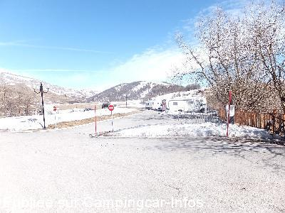
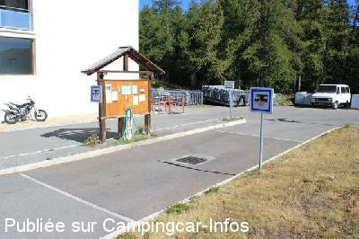
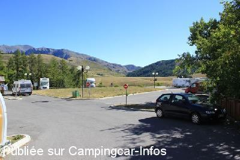
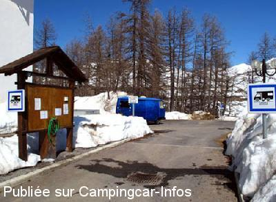
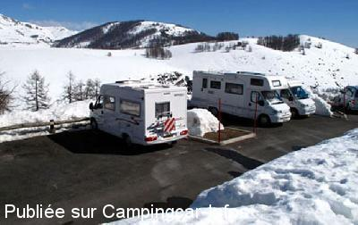
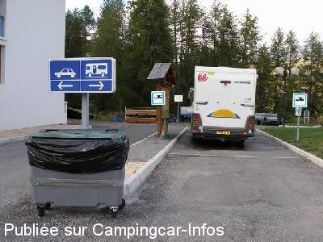

ASN = Aire de services avec stationnement nuit possible de :
VALBERG
(N° 551)
Accès/adresse :
Route de la Roye
06470 VALBERG
06470 VALBERG
Latitude : (Nord) 44.09615° Décimaux ou 44° 5′ 46′′
Longitude : (Est) 6.93671° Décimaux ou 6° 56′ 12′′
Tarif : 2015
Stationnement, services, électricité : 10 €
Taxe de séjour : 0,20 €
Type de borne : Plateforme
Services :


Autres informations :
21 emplacements numérotés
Perchés sur un promontoire
donnant face à l'orée du parc du Mercantour
Tel Office du Tourisme : +33(0)493 232 425
http://www.valberg.com

Le 08/03/2015 par van paemel

Le 12/08/2012 par iron

Le 12/08/2012 par iron

Le 24/03/2009 par bougesy

Le 24/03/2009 par bougesy

Le 29/11/2007 par MICO
de
dumont
le 13/07/2015 :
dommage que le prix soit le même l'été que l'hiver.
pas besoin d'électricité l'été où alors très faible consommation
dommage que le prix soit le même l'été que l'hiver.
pas besoin d'électricité l'été où alors très faible consommation
de
van paemel
le 08/03/2015 :
§ Pour les amoureux de la montagne pour le ski ou pour des balades je vous confirme magnique air de camping car c est tellement rare dans le 06 , celui dispose de 21place avec electricité eau et vidange , l endroit tres calme avec une vue magnifique à quelques minutes du centre et cela pour 10€ et si vous avez envie d 'un petit restaurant je vous conseille l Avalanche ouvert toute l année, excellente ambiance et la fondu est à tombé je recommande
§ Pour les amoureux de la montagne pour le ski ou pour des balades je vous confirme magnique air de camping car c est tellement rare dans le 06 , celui dispose de 21place avec electricité eau et vidange , l endroit tres calme avec une vue magnifique à quelques minutes du centre et cela pour 10€ et si vous avez envie d 'un petit restaurant je vous conseille l Avalanche ouvert toute l année, excellente ambiance et la fondu est à tombé je recommande
de
sergio 84
le 15/02/2015 :
aire superbe à 10mn centre ville
magnifique vue
le chasse neige passe tous les jours
seul petit hic mais ca marche quand meme tres bien vidange WC dans la grille au sol un tuyau permet de nettoyer une fois wc vidé
aire superbe à 10mn centre ville
magnifique vue
le chasse neige passe tous les jours
seul petit hic mais ca marche quand meme tres bien vidange WC dans la grille au sol un tuyau permet de nettoyer une fois wc vidé
de
Adagio
le 17/07/2013 :
Passge en juin 2013. C'est vrai que cette aire est parfaite. Vue sublime, calme, 10 € yc électricité, services gratuits.
Passge en juin 2013. C'est vrai que cette aire est parfaite. Vue sublime, calme, 10 € yc électricité, services gratuits.
de
Jean-Bernard Boschung (iron)
le 12/08/2012 :
§ Nous sommes resté deux jours, soit du 30/07 au 01/08 sur cette aire.
Tout est parfait, l'accès, l'emplacement pour les services et le calme. Seul un peu excentrée par rapport au centre de la station (environ 10' de marche).
Le prix est resté identique, à savoir 10€ + taxe de séjour 0.20€/adulte, soit 20.80 € pour deux jours. Dans ce prix est compris les services et l'électricité.
Nous y reviendrons c'est sur.
§ Nous sommes resté deux jours, soit du 30/07 au 01/08 sur cette aire.
Tout est parfait, l'accès, l'emplacement pour les services et le calme. Seul un peu excentrée par rapport au centre de la station (environ 10' de marche).
Le prix est resté identique, à savoir 10€ + taxe de séjour 0.20€/adulte, soit 20.80 € pour deux jours. Dans ce prix est compris les services et l'électricité.
Nous y reviendrons c'est sur.
de
Papynou69
le 16/07/2012 :
§
Très belle aire,très bien aménagée avec électricité à chaque emplacement. Bizare la vidange des WC dans la grille au sol. Mais en été, nous n'avons pas besoin de l'électricité et le tarif est élevé 10€ + services !
§
Très belle aire,très bien aménagée avec électricité à chaque emplacement. Bizare la vidange des WC dans la grille au sol. Mais en été, nous n'avons pas besoin de l'électricité et le tarif est élevé 10€ + services !
de
GES
le 21/02/2012 :
bizarre de vidanger les wc dans la grille au sol.
La grille etant gelée j'ai vidangé dans le WC prévu pour les CCRistes au 1er etage du batimant
bizarre de vidanger les wc dans la grille au sol.
La grille etant gelée j'ai vidangé dans le WC prévu pour les CCRistes au 1er etage du batimant
de
Buron JC et Lu7
le 15/11/2011 :
Aire très sympathique et pas encombrée en cette période de l'année
belles balades dans les environs. Merci à la municipalité.
Aire très sympathique et pas encombrée en cette période de l'année
belles balades dans les environs. Merci à la municipalité.
de
Carré Daniel
le 02/10/2010 :
Aire bien située, pour la trouver plus facilement, prendre dans le centre ville, au rond-point, la direction école des neiges. La cassette WC se vide dans la grille au sol. Tarif 10€ + 2€ de taxe, eau et électricité compris. §
Aire bien située, pour la trouver plus facilement, prendre dans le centre ville, au rond-point, la direction école des neiges. La cassette WC se vide dans la grille au sol. Tarif 10€ + 2€ de taxe, eau et électricité compris. §
de
camille
le 28/08/2010 :
Super, nous avons passé une semaine, vue imprenable sur le Mercantour. Par contre, pour y accéder ? Le tarif un peu élevé, pour une aire de camping-cars ! On y retournera...
Super, nous avons passé une semaine, vue imprenable sur le Mercantour. Par contre, pour y accéder ? Le tarif un peu élevé, pour une aire de camping-cars ! On y retournera...
de
Jean-Claude et Nathalie
le 14/02/2010 :
Nous avons passé une semaine formidable avec le beau temps et un bon accueil des gens de la station. Une bonne aire pour passer des vacances.
Sur la route du retour, en montant sur Castellane, nous sommes tombés en panne, nous tenons à remercier un camping-cariste descendant d'Allos pour nous avoir dépanner. Je pense qu'il se reconnaitra, un très grand merci.
Nous avons passé une semaine formidable avec le beau temps et un bon accueil des gens de la station. Une bonne aire pour passer des vacances.
Sur la route du retour, en montant sur Castellane, nous sommes tombés en panne, nous tenons à remercier un camping-cariste descendant d'Allos pour nous avoir dépanner. Je pense qu'il se reconnaitra, un très grand merci.
de
bouges
le 24/03/2009 :
Séjour en Mars. Tarif toujours à 10 € + taxe locale, 21 emplacements numérotés, accueil très sympa. Attention, l'installation d'eau potable n'est pas hors gel. Station très agréable et accueillante.
Mais quelle route d'accès !!
Séjour en Mars. Tarif toujours à 10 € + taxe locale, 21 emplacements numérotés, accueil très sympa. Attention, l'installation d'eau potable n'est pas hors gel. Station très agréable et accueillante.
Mais quelle route d'accès !!
de
fau
le 15/07/2008 :
Le revêtement de l'aire vient d'être refait. Tous les emplacements sont pratiquement de niveau. Merci à la municipalité de Péone pour l'entretien et merci à la gardienne très sympathique. Il faut juste regretter les camping-caristes qui conseillent de venir à cette aire pour les services gratuits et partir se garer ailleurs. Ce n'est pas ainsi que l'on incitera les municipalités à faire de telle réalisation.
Le revêtement de l'aire vient d'être refait. Tous les emplacements sont pratiquement de niveau. Merci à la municipalité de Péone pour l'entretien et merci à la gardienne très sympathique. Il faut juste regretter les camping-caristes qui conseillent de venir à cette aire pour les services gratuits et partir se garer ailleurs. Ce n'est pas ainsi que l'on incitera les municipalités à faire de telle réalisation.
de
F AUDIOT
le 05/03/2007 :
Aire de services bien sympathique, tranquille, très belle vue sur les montagnes, malgré le prix 10€. Mais il faut saluer l'effort de la mairie, bien rare dans les Alpes Maritimes.
Aire de services bien sympathique, tranquille, très belle vue sur les montagnes, malgré le prix 10€. Mais il faut saluer l'effort de la mairie, bien rare dans les Alpes Maritimes.